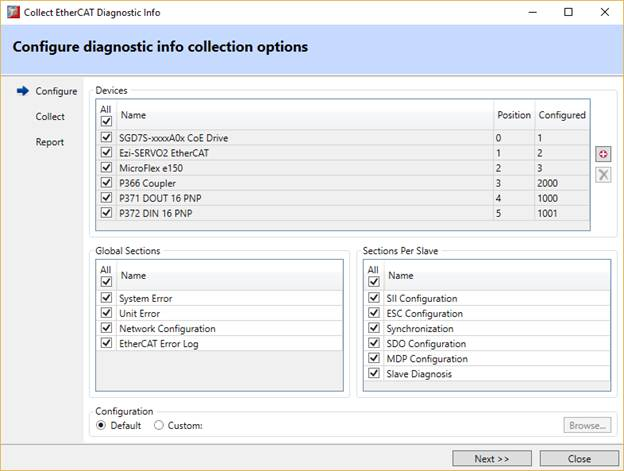
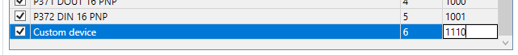
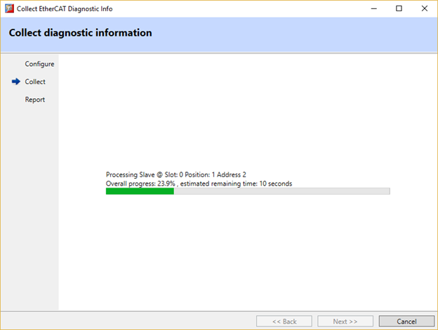
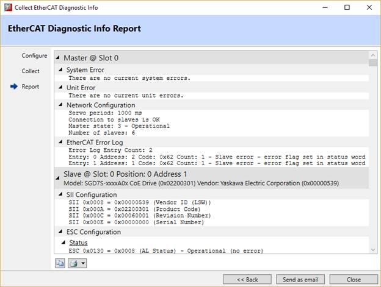

The diagnostics wizard is used for the collection of diagnostic and debugging information and presenting it to the user in form of a report.

To open the wizard double-click on the controller image in the Intelligent Drives screen.
The wizard starts with the configuration page. It contains user interface to select devices and which information is to be collected and added to the report.
EtherCAT devices detected by the controller are presented to the user as a list. The user can select from which devices the diagnostic information will be collected. If no devices are automatically detected it is possible to add up to 3 custom entries by using the button. These can be removed later by selecting an existing custom device entry in the list and pressing the button.
For custom entries the user can edit their name, slave position and configured address.

This list represents the following sections from the report containing information which is not specific to a device, but instead is global for either the controller itself or the EtherCAT module in case of modular architectures:
That list represents following sections containing information collected on per slave device basis:
The configuration page allows using custom configuration from an XML file in specific cases when standard configuration is not suitable.

The wizard starts collecting data after configuration has been selected. It might be a lengthy process depending on the number of selected devices and sections. Progress is displayed on information collection page indicating currently processed device as well as estimation of the remaining time.

The report page is displayed after the information has been successfully collected. The information is presented in hierarchical form and it is possible to collapse and expand different sections.
The report can be copied to the clipboard
or printed
by pressing
 and
and
 buttons respectively.
buttons respectively.
‘Send as email’ button can be used to prepare and send the report as an email to Trio Technical Support.